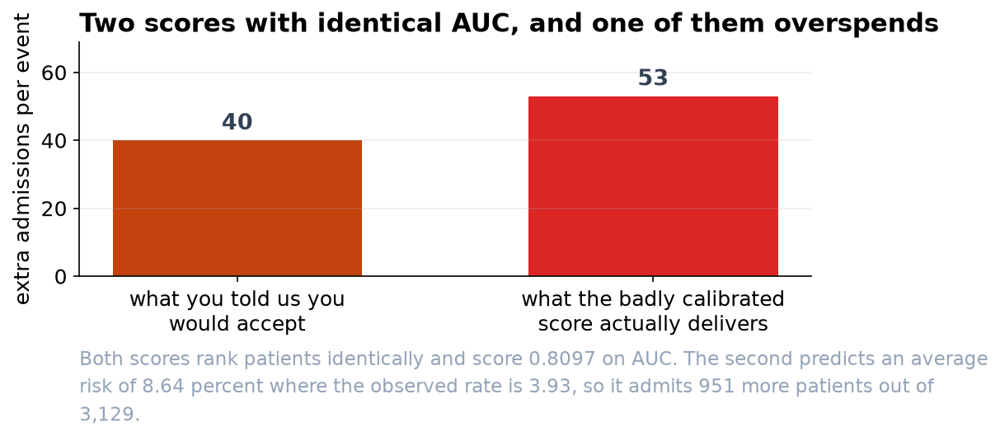

The Score Is Ready. Do Not Judge It on AUC.
We built two versions with identical AUC. One of them would admit nine hundred extra patients a year without anyone noticing why.
Recommendation
Adopt the score, with the threshold set at 2.4 percent, which is what your stated view that a missed event is forty times worse than an unnecessary night implies. On our held-out sample it admits about 42 percent of chest pain presentations and catches 105 of 123 events. Before it goes live, insist that whoever maintains it reports calibration and not only AUC, for the reason below.
The thing we would like you to take away
We built two versions of this score. They rank patients in exactly the same order, so they have the same AUC to four decimal places, and any evaluation that stops at AUC would call them equally good.
One of them says that about 4 in 100 of these patients will have an event, which matches what actually happens. The other says about 9 in 100. It is wrong by more than double, and nothing in a standard model report would show it.
Put both through your 2.4 percent threshold and the second one admits 951 more patients out of 3,129. It misses no events at all, which sounds better until you price it: that is 53 extra admissions for each extra event caught, against the 40 you told us you would accept. A badly calibrated score does not look reckless. It looks careful, and it is quietly making a different trade than the one you chose.

What the score does at your threshold
- Admits 1,305 of 3,129 presentations and catches 105 of the 123 events.
- Misses 18 events. We want to be direct about that number: no threshold catches everything, and moving it down to catch more costs admissions at an accelerating rate. If 18 is unacceptable, the right response is to revisit the 40:1 ratio with us rather than to adjust the score.
- Beats both fallbacks across every threshold anyone might reasonably choose, which is the test a score has to pass to be worth using at all. Admitting every chest pain presentation is worse than doing nothing once the threshold rises above about 4 percent.

What we are not claiming
The score estimates a rate among similar patients. No individual has a 4 percent event, and a number below the threshold is not a clearance. It should sit alongside clinical judgment and never in place of it, and any clinician overriding it should be able to do so without justifying themselves.
We have reported one figure for the whole cohort. A score that is well calibrated on average can be poorly calibrated for a subgroup, and we have not yet checked performance by age, sex or ethnicity. We would want that done before deployment, not after.
Finally, this was built and tested on historical presentations from one department. Its calibration will drift as case mix and practice change, and it needs re-checking on recent data at a fixed interval rather than when somebody happens to wonder.